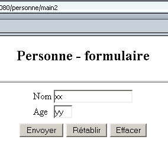
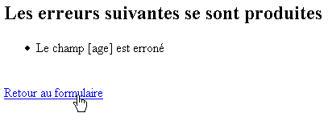
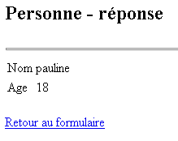
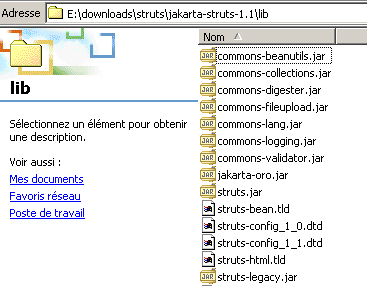
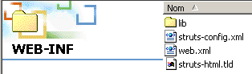

2. L'application strutspersonne
Nous avons traité par la méthode classique, servlet et pages JSP, une application personne. Nous nous proposons d'introduire Struts avec cette même application.
2.1. Le fonctionnement de l'application
Rappelons ici le fonctionnement de l'application personne que nous avons développée. Elle est composée :
- d'une servlet main. C'est elle qui assure toute la logique de l'application.
- de trois pages JSP : formulaire.personne.jsp, reponse.personne.jsp, erreurs.personne.jsp
Le fonctionnement de l'application est le suivant. Elle est accessible via l'URL http://localhost:8080/personne/main. A cette url, on obtient un formulaire fourni par la page formulaire.personne.jsp :

L'utilisateur remplit le formulaire et appuie sur le bouton [Envoyer] de type submit. Le bouton [Rétablir] est de type reset, c.a.d. qu'il remet le document dans l'état où il a été reçu. Le bouton [Effacer] est de type button. L'utilisateur doit fournir un nom et un âge valides. Si ce n'est pas le cas, une page d'erreurs lui est envoyée au moyen de la page JSP erreurs.personne.jsp. Voici des exemples :
Echange n° 1
 |  |
Si on suit le lien [Retour au formulaire] on retrouve celui-ci dans l'état où on l'a laissé :
Echange n° 2
 |  |
Si l'utilisateur envoie des données correctes, l'application lui envoie une réponse au moyen de la page JSP reponse.personne.jsp.
Echange n° 1
 |  |
Si on suit le lien [Retour au formulaire] on retrouve celui-ci dans l'état où on l'a laissé :
Echange n° 2
 |  |
2.2. L'architecture Struts de l'application
Nous adopterons l'architecture Struts suivante :
 |
- il y aura trois vues
- le contrôleur sera celui fourni par Struts
- FormulaireBean est la classe chargée de mémoriser les valeurs du formulaire présenté par la vue formulaire.personne.jsp
- FormulaireAction est la classe chargée de traiter les valeurs de FormulaireBean et d'indiquer la page réponse à envoyer :
- la vue erreurs.personne.jsp si les données du formulaire sont erronées
- la vue reponse.personne.jsp sinon
Pour le développeur, le travaille consiste à écrire le code :
- des trois vues
- du bean FormulaireBean associé au formulaire
- de la classe FormulaireAction chargée de traiter le formulaire
2.3. Compiler les classes nécessaires à l'application Struts
Pour compiler les classes nécessaires à notre application, nous utiliserons Jbuilder. Celui-ci travaille avec un JDK dans lequel ne se trouvent pas les classes nécessaires aux applications Struts. On pourra configurer Jbuilder de la façon suivante :
- option Tools (Outils) /Configure JDKs (Configurer les JDK)

- on utiliser le bouton [Add/Ajouter] pour ajouter aux archives de classes de JBuilder, les .jar amenés par Struts. Si on a décompressé l'archive Struts sur le disque, on pourra ajouter à Jbuilder tous les .jar du dossier <struts>/lib :

On peut ajouter aux archives de Jbuilder tous les .jar ci-dessus. Nous avons déjà vu que Tomcat a lui aussi besoin d'avoir accès aux archives de Struts. Pour Tomcat 4.x, on peut mettre les .jar de Struts dans <tomcat4>\common\lib. Pour Tomcat 5.x, on pourra les placer dans <tomcat5>\shared\lib. On peut décider ensuite que Jbuilder trouvera les .jar de Struts au même endroit que Tomcat. C'est ce qui a été fait dans la copie d'écran montrant un peu plus haut les .jar de Jbuilder. Ils ont été pris dans <tomcat5>\shared\lib.
Si donc, lors de la compilation d'une classe, Jbuilder signale qu'il ne trouve pas une classe Struts, vérifiez deux choses :
- l'orthographe de la classe
- les .jar utilisés par Jbuilder. Tous les .jar de Struts doivent en faire partie.
2.4. Les vues de l'application strutspersonne
Les trois vues de l'application sont les suivantes :
- formulaire.personne.jsp : affiche le formulaire de saisie des nom et âge d'une personne
- reponse.personne.jsp : affiche les valeurs saisies si elles sont valides
- erreurs.personne.jsp : affiche les erreurs s'il y en a
2.4.1. La vue erreurs.personne.jsp
Cette vue qui affiche une liste d'erreurs sera définie comme suit :
<%@ taglib uri="/WEB-INF/struts-html.tld" prefix="html" %>
<html>
<head>
<title>Personne</title>
</head>
<body>
<h2>Les erreurs suivantes se sont produites</h2>
<html:errors/>
<html:link page="/formulaire.do">
Retour au formulaire
</html:link>
</body>
</html>
Il y a deux nouveautés dans ce code :
- la présence de balisee <html:XX/> qui ne sont pas des balise HTML. On peut en effet créer des bibiothèques de balises JSP qui lors de la transformation de la page JSP en servlet sont transformées en code Java.
- la page JSP doit déclarer les bibliothèques de balises qu'elle utilise. Elle le fait ici avec la ligne
Cette ligne donne deux informations :
- uri : l'emplacement du fichier régissant les règles d'utilisation de la bibliothèque. Le fichier struts-html.tld est fourni dans la distribution de Struts. On le placera, dans l'exemple ci-dessus, dans le dossier WEB-INF.
- prefix : l'identificateur utilisé dans le code pour préfixer les balises de la bibliothèque. Cela permet d'éviter les conflits de noms qui pourraient survenir lors de l'utilisation simultanée de plusieurs bibliothèques de balises. Il serait possible de trouver deux balises de même nom dans deux bibliothèques différentes. En donnant un préfixe différent à chaque bibliothèque, on supprime toute ambiguïté.
- la balise <html:errors> affiche la liste d'erreurs que le contrôleur Struts lui tansmet.
- la balise <html:link> génère un lien pointant sur /C/page où
- C est le contexte de l'application
- page est l'URL indiquée dans l'attribut page de la balise
Le balise
génèrera le code HTML suivant :
où C est le contexte de l'application
2.4.2. Test de la vue erreurs.personne.jsp
- le fichier erreurs.personne.jsp est placé dans le dossier vues de l'application strutspersonne :

- le fichier struts-html.tld est pris dans la distribution struts (<struts>/lib) et placé dans WEB-INF :

- le fichier struts-config.xml est modifié de la façon suivante :
<?xml version="1.0" encoding="ISO-8859-1" ?>
<!DOCTYPE struts-config PUBLIC
"-//Apache Software Foundation//DTD Struts Configuration 1.1//EN"
"http://jakarta.apache.org/struts/dtds/struts-config_1_1.dtd">
<struts-config>
<action-mappings>
<action
path="/main"
parameter="/vues/main.html"
type="org.apache.struts.actions.ForwardAction"
/>
<action
path="/erreurs"
parameter="/vues/erreurs.personne.jsp"
type="org.apache.struts.actions.ForwardAction"
/>
</action-mappings>
</struts-config>
Nous créons dans le fichier de configuration une nouvelle URL /erreurs destinée à être traitée par le contrôleur struts. L'URL /erreurs.do sera redirigée vers la vue /vues/erreurs.personne.jsp. Le fichier struts-config.xml est placé dans le dossier WEB-INF.
- nous relançons Tomcat pour que le nouveau fichier struts-config.xml soit pris en compte, puis nous demandons l'url http://localhost:8080/strutspersonne/erreurs.do :

La balise <html:errors/> n'a rien produit. C'est normal, l'action ForwardAction n'a pas généré la liste d'erreurs attendue par la balise. Néanmoins, la réponse ci-dessus montre que notre vue JSP est au moins syntaxiquement correcte sinon nous aurions obtenu une page d'erreurs. Vérifions le code HTML reçu par le navigateur (View/Source) :
<html>
<head>
<title>Personne - erreurs</title>
</head>
<body>
<h2>Les erreurs suivantes se sont produites</h2>
<a href="/strutspersonne/formulaire.do">Retour au formulaire</a>
</body>
</html>
On notera le lien produit par la balise <html:link>. Le contexte /strutspersonne a été automatiquement inclus dans le lien. Cela permet de déplacer l'application d'un contexte à un autre (changement de machine par exemple) sans avoir à changer les liens générés par <html:link>.
2.4.3. La vue reponse.personne.jsp
Cette vue qui confirme les valeurs saisies dans le formulaire est la suivante :
<%@ taglib uri="/WEB-INF/struts-html.tld" prefix="html" %>
<%
// on récupère les données nom, age
//String nom=(String)request.getAttribute("nom");
String nom="jean";
//String age=(String)request.getAttribute("age");
String age="24";
%>
<html>
<head>
<title>Personne</title>
</head>
<body>
<h2>Personne - réponse</h2>
<hr>
<table>
<tr>
<td>Nom</td>
<td><%= nom %>
</tr>
<tr>
<td>Age</td>
<td><%= age %>
</tr>
</table>
<br>
<html:link page="/formulaire.do">
Retour au formulaire
</html:link>
</body>
</html>
La page affiche deux informations [nom] et [age] qui lui seront passées par le contrôleur dans l'objet prédéfini request. Ici, nous faisons un test où le contrôleur n'aura pas l'occasion de fixer les valeurs de [nom] et [age]. Aussi initialisons-nous ces deux informations avec des valeurs arbitraires. Par ailleurs, ici également le lien de retour vers le formulaire est généré par une balise <html:link>.
2.4.4. Test de la vue reponse.personne.jsp
- le fichier reponse.personne.jsp est placé dans le dossier vues de l'application strutspersonne :

- le fichier struts-config.xml est modifié de la façon suivante :
<?xml version="1.0" encoding="ISO-8859-1" ?>
<!DOCTYPE struts-config PUBLIC
"-//Apache Software Foundation//DTD Struts Configuration 1.1//EN"
"http://jakarta.apache.org/struts/dtds/struts-config_1_1.dtd">
<struts-config>
<action-mappings>
<action
path="/main"
parameter="/vues/main.html"
type="org.apache.struts.actions.ForwardAction"
/>
<action
path="/erreurs"
parameter="/vues/erreurs.personne.jsp"
type="org.apache.struts.actions.ForwardAction"
/>
<action
path="/reponse"
parameter="/vues/reponse.personne.jsp"
type="org.apache.struts.actions.ForwardAction"
/>
</action-mappings>
</struts-config>
Nous créons dans le fichier de configuration une nouvelle URL /reponse destinée à être traitée par le contrôleur struts. L'URL /reponse.do sera redirigée vers la vue /vues/reponse.personne.jsp. Le fichier struts-config.xml est placé dans le dossier WEB-INF.
- nous relançons Tomcat pour que le nouveau fichier struts-config.xml soit pris en compte, puis nous demandons l'url http://localhost:8080/strutspersonne/erreurs.do :

Nous obtenons bien ce qui était attendu.
2.4.5. La vue formulaire.personne.jsp
Cette vue présente le formulaire de saisie des nom et âge de l'utilisateur. Son code JSP est le suivant :
<%@ taglib uri="/WEB-INF/struts-html.tld" prefix="html" %>
<html>
<meta http-equiv="pragma" content="no-cache">
<head>
<title>Personne - formulaire</title>
<script language="javascript">
function effacer(){
with(document.frmPersonne){
nom.value="";
age.value="";
}
}
</script>
</head>
<body>
<center>
<h2>Personne - formulaire</h2>
<hr>
<html:form action="/main" name="frmPersonne" type="istia.st.struts.personne.FormulaireBean">
<table>
<tr>
<td>Nom</td>
<td><html:text property="nom" size="20"/></td>
</tr>
<tr>
<td>Age</td>
<td><html:text property="age" size="3"/></td>
</tr>
<tr>
</table>
<table>
<tr>
<td><html:submit value="Envoyer"/></td>
<td><html:reset value="Rétablir"/></td>
<td><html:button property="btnEffacer" value="Effacer" onclick="effacer()"/></td>
</tr>
</table>
</html:form>
</center>
</body>
</html>
Nous retrouvons la bibliothèque de balises struts-html.tld utilisée dans la vue erreurs. De nouvelles balises apparaissent :
sert à la fois à générer la balise HTML <form> et à donner des informations au contrôleur qui aura à traiter ce formulaire :
On remarquera que la méthode d'envoi des paramètres du formulaire (GET/POST) au contrôleur n'est pas précisée. On pourrait le faire avec l'attribut method. En l'absence de celui-ci, c'est la méthode POST qui est utilisée par défaut. | |||||||
sert à générer la balise <input type="text" value="..."> : propertynom du champ du bean du formulaire qui sera associé à la zone de saisie. A l'envoi du formulaire au serveur (client -> serveur), le champ du bean prendra la valeur du champ de saisie. A l'affichage du formulaire (serveur -> client), la valeur contenue dans le champ du bean est affichée dans la zone de saisie. | |||||||
sert à générer la balise HTML <input type="submit"...> | |||||||
sert à générer la balise HTML <input type="reset"...> | |||||||
sert à générer la balise HTML <input type="button"...> |
2.4.6. Le bean associé au formulaire formulaire.personne.jsp
- Avec Struts, tout formulaire doit être associé à un bean chargé de mémoriser les valeurs du formulaire et de conserver celles-ci dans la session courante. Un bean est une classe Java qui doit respecter une syntaxe particulière. Le bean associé à un formulaire doit dériver de la classe ActionForm définie dans les bibliothèque de Struts :
- les noms des attributs du bean doivent correspondre aux champs du formulaire (attributs property des balises html:text du formulaire). D'après le code du formulaire précédent, le bean doit donc avoir deux champs appelés nom et age.
- pour chaque champ XX du formulaire, le bean doit définir deux méthodes :
- public void setXX(Type valeur) : pour affecter une valeur à l'attribut XX
- Type getXX() : pour obtenir la valeur du champ XX
Le bean associé au formulaire précédent pourrait être le suivant :
package istia.st.struts.personne;
import org.apache.struts.action.ActionForm;
public class FormulaireBean extends ActionForm {
// nom
private String nom = null;
public String getNom() {
return nom;
}
public void setNom(String nom) {
this.nom = nom;
}
// age
private String age = null;
public String getAge() {
return age;
}
public void setAge(String age) {
this.age = age;
}
}
On compilera cette classes avec Jbuilder.
2.4.7. Test de la vue formulaire.personne.jsp
le fichier formulaire.personne.jsp est placé dans le dossier vues de l'application strutspersonne :

- le fichier struts-config.xml est modifié de la façon suivante :
<?xml version="1.0" encoding="ISO-8859-1" ?>
<!DOCTYPE struts-config PUBLIC
"-//Apache Software Foundation//DTD Struts Configuration 1.1//EN"
"http://jakarta.apache.org/struts/dtds/struts-config_1_1.dtd">
<struts-config>
<action-mappings>
<action
path="/main"
parameter="/vues/main.html"
type="org.apache.struts.actions.ForwardAction"
/>
<action
path="/erreurs"
parameter="/vues/erreurs.personne.jsp"
type="org.apache.struts.actions.ForwardAction"
/>
<action
path="/reponse"
parameter="/vues/reponse.personne.jsp"
type="org.apache.struts.actions.ForwardAction"
/>
<action
path="/formulaire"
parameter="/vues/formulaire.personne.jsp"
type="org.apache.struts.actions.ForwardAction"
/>
</action-mappings>
</struts-config>
Nous créons dans le fichier de configuration une nouvelle URL /formulaire destinée à être traitée par le contrôleur struts. L'URL /formulaire.do sera redirigée vers la vue /vues/formulaire.personne.jsp. Le fichier struts-config.xml est placé dans le dossier WEB-INF.
- nous plaçons la classe FormulaireBean dans WEB-INF/classes :

- nous relançons Tomcat pour que le nouveau fichier struts-config.xml soit pris en compte, puis nous demandons l'url http://localhost:8080/strutspersonne/formulaire.do :

Nous obtenons bien le formulaire. Nous pouvons avoir la curiosité de regarder comment ont été "traduites" les balises <html:XX> qui parsemaient le code JSP du formulaire :
<html>
<meta http-equiv="pragma" content="no-cache">
<head>
<title>Personne - formulaire</title>
<script language="javascript">
function effacer(){
with(document.frmPersonne){
nom.value="";
age.value="";
}
}
</script>
</head>
<body>
<center>
<h2>Personne - formulaire</h2>
<hr>
<form name="frmPersonne" method="post" action="/strutspersonne/main.do">
<table>
<tr>
<td>Nom</td>
<td><input type="text" name="nom" size="20" value=""></td>
</tr>
<tr>
<td>Age</td>
<td><input type="text" name="age" size="3" value=""></td>
</tr>
<tr>
</table>
<table>
<tr>
<td><input type="submit" value="Envoyer"></td>
<td><input type="reset" value="Rétablir"></td>
<td><input type="button" name="btnEffacer" value="Effacer" onclick="effacer()"></td>
</tr>
</table>
</form>
</center>
</body>
</html>
Dans le formulaire obtenu, les boutons |Rétablir] et [Effacer] fonctionnent. Le bouton [Envoyer] de type submit renvoie à l'URL /strutspersonne/main.do. D'après le fichier web.xml de l'application, le contrôleur Struts va la prendre en charge. D'après le fichier struts-config.html, le contrôleur doit rediriger la requête vers la vue /vues/main.html. Essayons :

Tout se passe comme attendu. Il nous reste à traiter véritablement les valeurs du formulaire, c.a.d. écrire la classe de type Action qui va recevoir les données du formulaire dans un objet FormulaireBean.